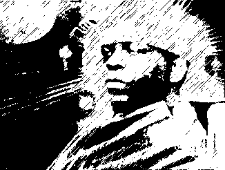

|

Afrofuturist icon Sun Ra.
Black music is often stereotyped as simple, emotional and down-to-earth,
dealing with themes like love and loss (blues, soul), or fast bucks, sexy
girls and gangland violence (rap/hip hop). But there is another side to
black music as well, an eccentric and visionary streak present in the
work of artists like Sun Ra, George Clinton (Parliament, Funkadelic) and
Lee Perry - a kind of cosmic consciousness where black people assume the
role of aliens or infiltrators who possess mystical knowledge and have
the power to transform reality by applying arcane lore in the form of
experimental music. After all, Africans were "abducted" by slave
ships in the 17th century and became "aliens" in their new,
unfamiliar country, America.
Kodwo Eshun, who writes for the British ID, The Wire and other publications,
has accomplished a remarkable feat of modern pop-culture archeology in
his book More Brilliant Than The Sun; Adventures in Sonic Fiction,
where he goes wild with the English language, spinning his own remix of
the themes present in the music of the aforementioned artists and many
others. Eshun expects a high level of cultural sophistication from the
reader, who is assaulted by strange neologisms ("grooverobbing",
"futurhytmachine") as the writer outlines new imaginary scientific
disciplines ("remixology", "breakbeat science") at
lightning speed.
The same supercharged prose is in evidence in the postings on a new
Internet mailing list, afrofuturism-l, home of several prominent black
countercultural voices, like Paul D. Miller, also known as DJ
Spooky. Some of the aims of the list are to "explore futurist
themes in black cultural production and the ways in which technological
innovation is changing the face of black art and culture, and to discuss
whether science fiction has become the most effective way to talk about
black experience". This list is in itself proof of the power of new
technology to change our ways of communication; instead of reading second-hand
information in journals or books, you can watch new ideas and concepts
as they are born - and you can participate in their birth.
Black people have been grappling with the questions about fluid identities
and appropriation of cultural forms that have become fashionable only
recently in the white world, and so it is no wonder that a certain science
fiction sensibility should be a part of the picture. The most exhilarating
part of following the list is that while participants are extremely knowledgeable
in contemporary cultural theory, they still manage to give their writings
a funky, humorous feel; in the words of one observer "Everyone here
speaks fluent Postmodernese." Everything of interest is explored
on the list - from the metamorphoses of Michael Jordan through character
stereotypes in movies like Matrix to spiritual work in cyberspace - the
latter started by guest list moderator Ron Eglash, who is a scholar working
on ethnomathematics and African fractals. DJ Spooky treats the readers
to excellent mini-essays and travel reports where he draws upon everything
from Plato and Freud to blaxploitation movies. One of the list regulars,
Mark Fisher, has posted a series of suggestive texts which serve as good
examples of the kind of ideas explored by the afro-futurists:
"As we approach the Millennium, the Bureau has noted a marked
increase in the activities of the enigmatic group known as Hyper-C. Agents
will be aware that Hyper-C is a clandestine distributed network, dedicated
to "aquatic return" and the "liquidation of Babylon".
Hyper-C is associated in particular with "sonic intelligence weaponry",
and has taken credit for many recent examples of info-terrorism, which
have been conventionally but erroneously labeled as musical recordings."
Afro-futurist resources
Afrofuturism
Kodwo Eshun, More
Brilliant than the Sun [Amazon]
Kodwo Eshun
interview [Crash Media].
Ron Eglash's pages on ethnomathematics.
Negrofile
e-zine.
to subscribe to the afrofuturism list: mail afrofuturism-subscribe@onelist.com
|